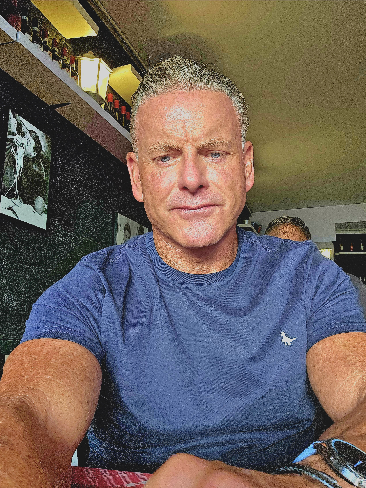
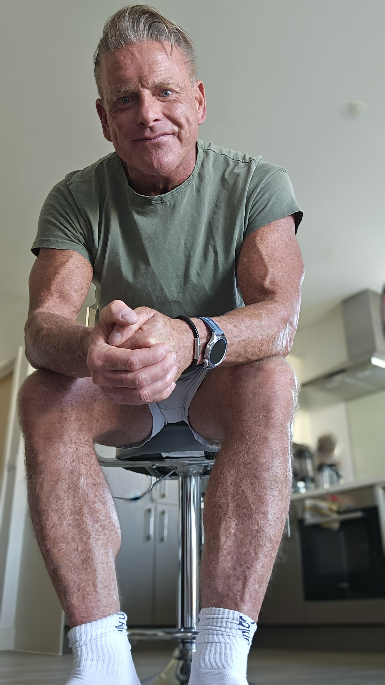

// The Product Result
Before & After
Same pose. 44 years apart. This is what the system produces.
You don't have to age the way you were told you would. 10 evidence-backed tenets that reverse your biological age, extend your healthspan, and keep you performing at your peak — decade after decade.

"One hour of hard exercise. Every single day. No exceptions. That's the backbone. Everything else builds on it."
At 35, a back injury left Lee incapacitated for weeks every month — spending over $1,000 on therapies, facing the prospect of vertebral fusion surgery. The real turning point came in 2015. A stress and trauma crisis that could have broken him instead drove him back to his core principle: one hour of hard training, every single day, without exception.
Since then, Lee has built a comprehensive architecture around that foundation — nutrition, sleep, hormones, biomarkers, and now the frontier of therapeutic peptides. The result is a biological age significantly below his chronological age, documented through regular DEXA scanning and blood biomarker tracking.
This isn't about looking good for your age. It's about performing at your peak for as long as possible — snowboarding at 80, not watching from the chalet.

Lee C. Stonehouse is 63. He trains every single day. He has a lower biological age than most men a decade younger. He is not exceptional by genetics — he built this through system, discipline, and the willingness to use every tool available to science.
His eating approach: Modified Mediterranean/Paleo — an 18:6 intermittent fasting window, calorie deficit, low GI. Not a rigid protocol, but a sustainable, evidence-aligned relationship with food.
His children — Gracie, Aiden, and Sophie — have inherited the focus. The next generation is proving the tenets work across every age.
Lee's is snowboarding until he's 80, minimum. Everything in this book — every tenet, every protocol — exists in service of that. Find yours and the rest becomes obvious.
These are not tips. They are a complete architecture for biological age reversal — built from two decades of personal practice, evidence-based medicine, and the latest longevity science. They work in combination. You don't pick the ones you like. You implement the system.
AGING?F***THAT! is written for people who refuse to accept that getting older means slowing down, breaking down, or giving up. It is a practical, evidence-based, no-compromise guide to building a body and a life that stays high-performance well into your 60s, 70s, and beyond.
Lee has spent decades building the system in his own body — tracked, measured, and documented. Every tenet is derived from what actually works, validated against his own bloodwork, DEXA scans, VO₂ max data, and biological age assessments.
Who is it for? Men and women over 45 who still have a North Star they intend to reach — and want the body to get them there.
Order on Amazon →Biological age isn't a number you inherit — it's one you manage. Explore Lee's live biomarker data, the science of therapeutic peptides, and calculate your own biological age using the same framework.
Same pose. 44 years apart. This is what the system produces.
Gracie, Aiden, and Sophie have inherited the focus. The health and fitness ethos Lee built isn't a personal quirk — it's a family operating system. The tenets work at every age.


"You don't slow down because you get old. You get old because you slow down."
"Biological age is not a sentence. It's a signal. And every signal can be improved."
"The data doesn't care about your excuses. Neither does your telomere length."
"One hour. Every day. Non-negotiable. Everything else in this book is built on that one rule."
Follow the journey on Instagram, get updates on the book launch, and connect with others who refuse to accept the standard narrative about ageing. The community is where the tenets come alive.